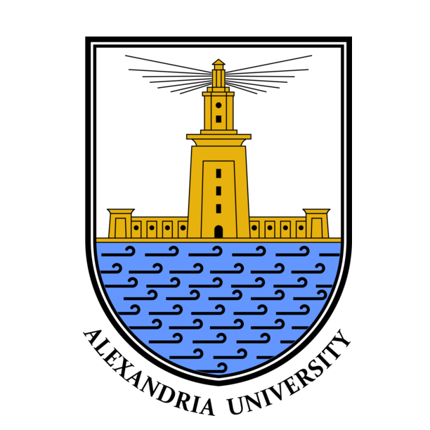
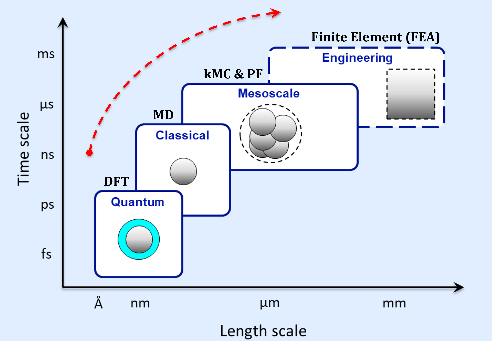
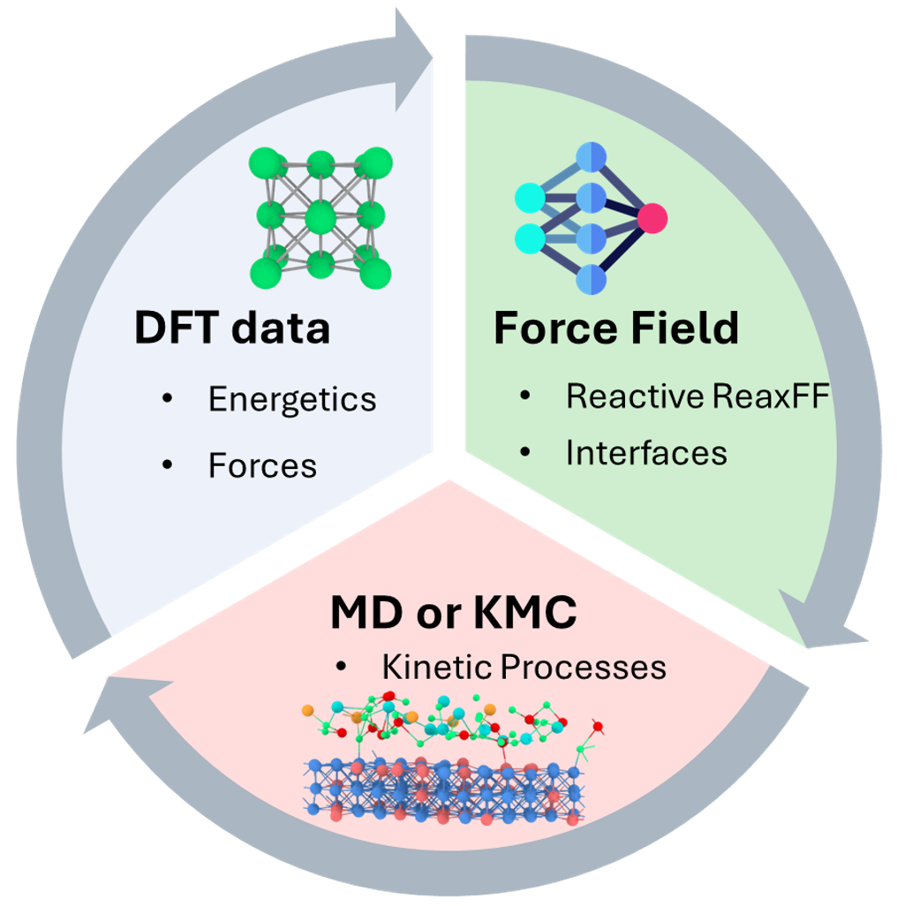
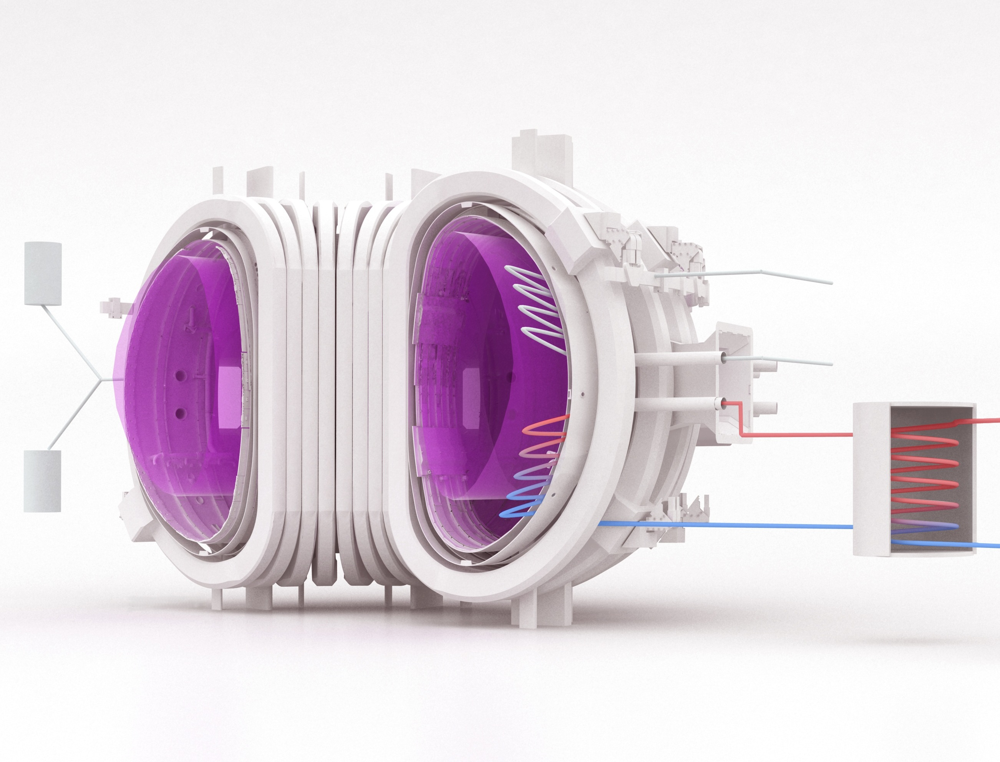

Penn State University
- Ph.D. in Nuclear Engineering
- Minor in Computational Materials
July 2026
My work focuses on multiscale modeling of materials behavior in advanced nuclear energy systems, with particular interest in molten salt corrosion, reactive interfaces, radiation damage, and fusion systems. I use modeling tools to connect atomic-scale behavior with long-term materials performance in extreme environments.
Beyond research, I have a huge passion for the history of Egypt, and I developed a framework to connect its vast history together in one "multiscale" picture!
July 2026

June 2021
My research vision is to build computational frameworks that connect atomic-scale mechanisms with engineering-scale materials behavior in extreme environments.
This multiscale view is essential for predicting how local reactions, defects, and interfaces shape long-term performance in nuclear materials.

A central theme of my work is understanding molten salt corrosion of Ni-based alloys for advanced nuclear systems. Modeling surface reactivity in molten salts is challenging because corrosion involves coupled chemistry, charge transfer, and evolving interfaces.
To achieve this, my research develops and applies reactive force-field approaches informed by DFT. These models enable reactive Molecular Dynamics (MD) and kinetic Monte Carlo (kMC) simulations that reveal atomic-scale mechanisms of materials degradation.

My future research direction expands this multiscale background toward fusion energy systems, where materials must operate under coupled thermal, mechanical, chemical, and irradiation extremes.
This includes finite element analysis and multiphysics simulation using tools such as MOOSE to study transport, degradation, and materials performance in fusion-relevant environments.


Beyond my nuclear materials research, I am developing a framework to understand Egypt's history as one continuous, multiscale system rather than disconnected eras.
I organize Egyptian history into 16 major eras, each averaging about 350 years, connecting dynastic shifts, cultural transformations, governance, and long-term civilizational identity across thousands of years.